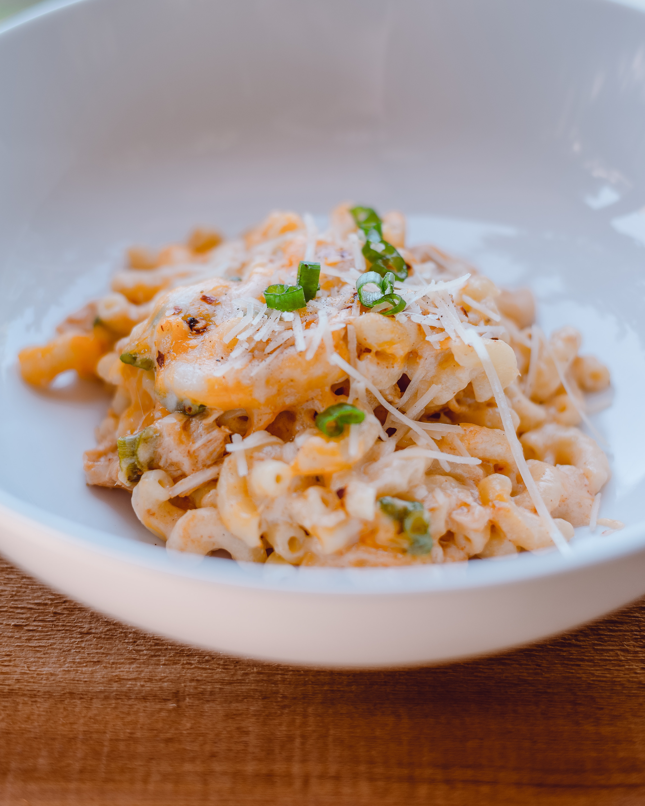

Peynirli makarna, öğrenci evinizde kalırken, beklenmedik misafirleriniz geldiğinde, ya da aceleyle bir şeyler atıştırmak istiyorsanız
imdadınıza koşabilecek son derece lezzetli bir yemektir.
Tarif: Hasan Berke Kala
- Kaç Kişilik: 4 Kişilik
- Hazırlama Süresi: 20 Dakika
- Pişirme Süresi: 15 Dakika
Peynirli Makarna Malzemeleri
- 250 Gr Makarna
- 1 Su Bardağı Ezilmiş Peynir
- 1 Su Bardağı Rendelenmiş Kaşar Peyniri
- 1/2 Su Bardağı Krema
- 1 Kase İnce Kıyılmış Dereotu
- 1 Silme Yemek Kaşığı Tereyağı
- Makarnayı Haşlamak için Su
Peynirli Makarna Hazırlanışı
- Makarnayı az tuz ilavesiyle haşlayıp süzün,
- Tereyağı eritip makarnayı ekleyin ve ezmeden nazikçe karıştırın,
- Kremayı ve peynirleri ekleyip peynirler eriyene kadar soteleyin,
- Dereotunu ekleyip karıştırın ve ateşten alın,
- Dilerseniz servis sırasında üzerine ekstra rendelenmiş peynir gezdirebilirsiniz.
Afiyetle yiyebilirsiniz, ellerinize sağlık...